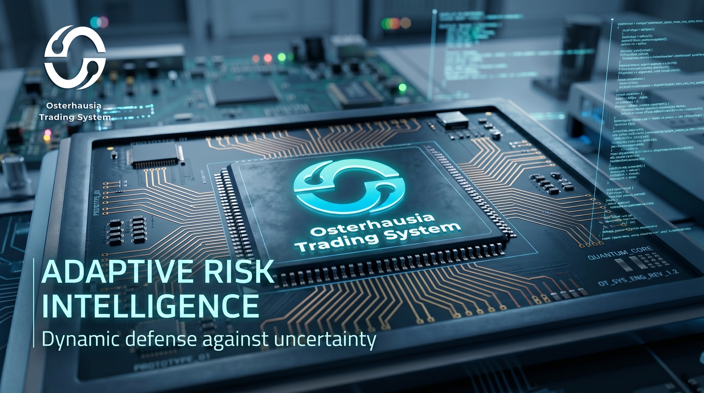
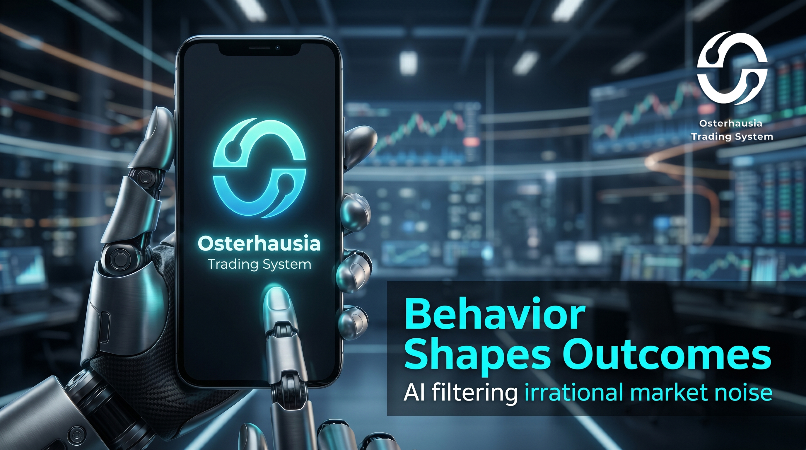
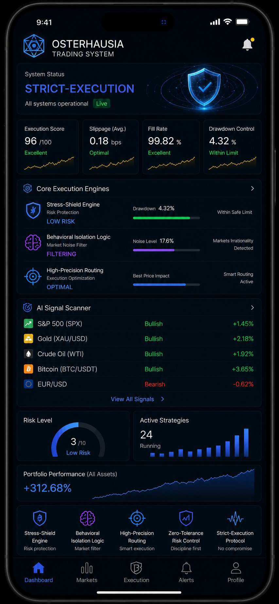
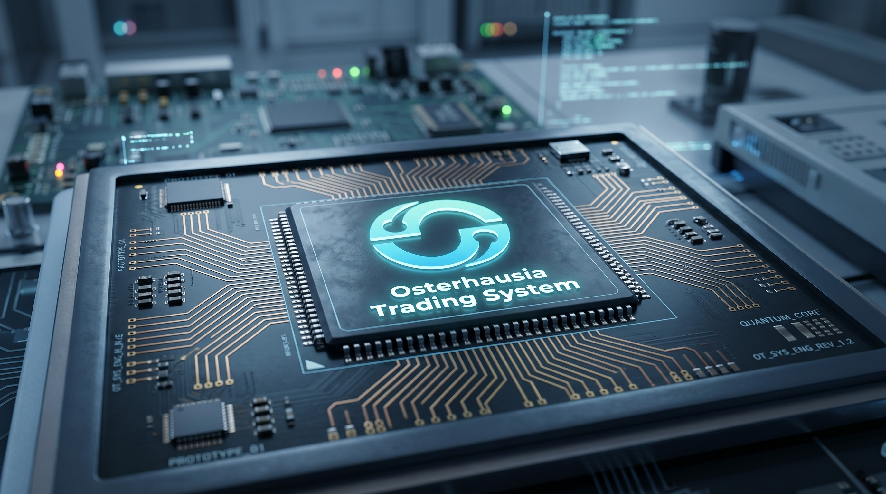

Osterhausia Trading System is an institutional-grade AI-driven financial infrastructure designed for global markets.
It integrates machine learning models, adaptive execution systems, and real-time risk intelligence to create a unified trading ecosystem.
The Osterhausia Trading System represents a new generation of financial intelligence platforms built for high-performance institutional environments.
It is designed to process massive streams of global market data and transform them into actionable intelligence in milliseconds.
Unlike traditional trading systems, Osterhausia Trading System operates through a multi-layer AI architecture that continuously adapts to market volatility,
liquidity shifts, and macroeconomic changes across global exchanges.
The system is structured around three core pillars: predictive intelligence, execution efficiency, and adaptive risk control.
These components work together inside the Osterhausia Trading System to ensure optimal decision-making under all market conditions.
AI Market Intelligence
Osterhausia Trading System analyzes global financial data using deep learning models to identify market patterns and predictive signals.

Adaptive Risk Engine
Risk exposure is dynamically adjusted in real time by Osterhausia Trading System to protect capital under volatile conditions.

Execution Infrastructure
Low-latency execution layer within Osterhausia Trading System ensures rapid response to market opportunities.
Liquidity Modeling
Osterhausia Trading System simulates liquidity flow across global markets to optimize trade execution timing.
System Architecture Visualization
The architecture of Osterhausia Trading System is built on distributed computing principles, enabling scalable and resilient market processing.
It integrates data ingestion layers, AI inference engines, and execution routing systems into a unified structure.


Build the Future with Osterhausia Trading System
Osterhausia Trading System is designed for institutional traders, hedge funds, and advanced financial operators seeking next-generation market intelligence.
The system continuously evolves through AI-driven learning models and global data feedback loops.